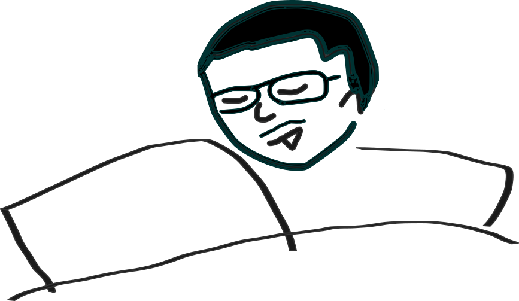

Rehop

ふんわり過ごして20年。社会人になって会社のなかだけで開発、制作してきました。
コロナ禍による、イベント自粛、外出自粛が続く中、多くの人が自宅で過ごす機会が増え、より一層WebやXRのニーズが高まっているように感じます。
そんな中、自分も世間の皆さまのお役に立てることができないかとふと思い立ち、このLPを作りました。
色んな方々のダイレクトな声が聞ける場となれば幸いです。
Contactから、ご質問、ご相談、ご指摘、ご依頼等、ご連絡いただければうれしいです。